Spectacle vivant, en tournée
Comme Ali
Un conte en musique de Fatima Ouassak, avec le compositeur Abdelhadi El Rharbi.

ContactLa Banlieue influence paname, paname influence le monde
L'Académie Céfran investit toute la chaîne de valeur de la culture française pour faire émerger les artistes des quartiers populaires et les faire renouer avec nos publics.
ContactC'est nous la chanson française
Les institutions regardent les quartiers populaires comme des territoires à équiper culturellement. On y fait de la médiation, on amène les gosses au musée, on leur apprend à aimer les « œuvres capitales de l'humanité ». Pendant ce temps, ce sont les Cross Cultural Kids, nés de la culture hybride des quartiers français, qui représentent la culture française dans le monde. Pour nous, ces quartiers sont des territoires de production, pas des territoires à équiper.
Lire le manifesteOn coupe on compresse on découpe on emballe on vend
Nous produisons et accompagnons les artistes qui font vivre cette nouvelle culture française. Faire notre théâtre, nos livres, nos films, et ne pas s'arrêter à raconter nos vies.
On documente et on nomme la culture des gosses des cités comme objet esthétique légitime.
Traiter l'actualité depuis un point de vue qui n'existe pas encore dans le paysage médiatique français.
Un conte en musique de Fatima Ouassak, avec le compositeur Abdelhadi El Rharbi.
Il est temps que la deuxième France s'éveille
La crise de la culture française, ce n'est pas que les budgets, c'est une offre qui ne se renouvelle plus.
On produit, on accompagne, on diffuse. Écrivez-nous.
Association loi 1901, licence d'entrepreneur de spectacles.

Président
Auditeur au Cycle des Hautes Études de la Culture (ministère de la Culture), cofondateur du Festival et Prix des Littératures Urbaines (Gaîté Lyrique), ancien consultant en transformation (Capgemini), ex-product manager (JobTeaser), ex-Devialet.
FROM PLANOISE, BESANÇON.
Il est grand temps qu'ça déménage, il n'y a jamais de tendance irrémédiable